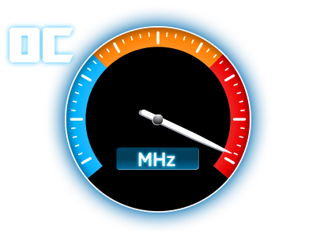

Varios de la computadora trabajan a un ritmo constante, es lo que se conoce como velocidad de reloj. Aunque el principal componente que define la velocidad es el Procesador.
Los principales componentes de los que se debe poner atencion a la velocidad de reloj son: